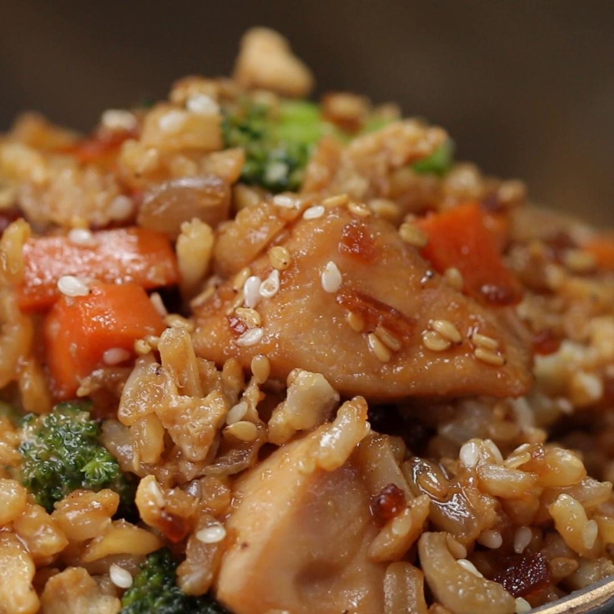

Welcome to AĐi's Recipe
Chicken Teriyaki Fried Rice

| Preparation time |
Cook time |
Total time |
20 Minutes |
15 Minutes |
35 Minutes |
Ingredients :
- 2 boneless, skinless chicken breasts, cubed.
- 1 cup teriyaki sauce (240 mL).
- 2 teaspoons oil.
- ½ cup onion (75 g), diced.
- 1 tablespoon garlic, minced.
- ½ cup carrot (60 g), diced.
- 1 cup broccoli floret (150 g).
- 3 eggs, beaten.
- 3 cups brown rice (690 g), cooked.
- 2 tablespoons soy sauce.
- 1 tablespoon sesame oil,pepper, to taste.
Preparation :
- Marinate the chicken in teriyaki sauce in the refrigerator for at least an hour.
- In a wok or deep skillet, add the chicken in the teriyaki marinade and cook thoroughly over high heat.
Set aside.
- In the same pan, add the oil and cook onions, garlic, and carrots until onions are translucent.
- Add broccoli and cook an additional 3-4 minutes. Push all of the cooked vegetables to the side of the pan.
- Beat the eggs and pour into the cleared half of the pan. Scramble the eggs and mix with the rest of the
vegetables.
- Add rice, cooked chicken, soy sauce, sesame oil, and pepper. Mix well and let the rice cook until slightly
crispy.
- Enjoy!
Nutrients info :
| Calories |
987g |
| Fats |
18g |
| Carbs |
154g |
| Fiber |
8g |
| Sugar |
12g |
| Protein |
49g |